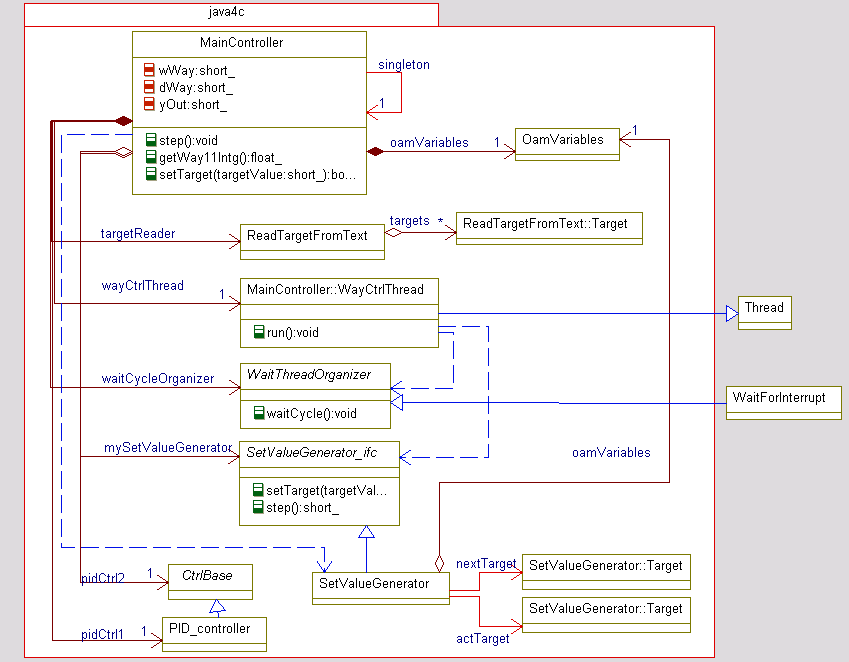
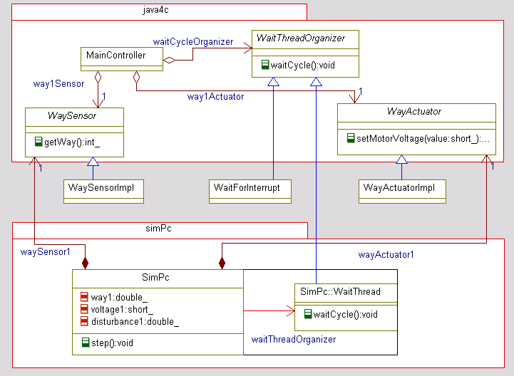

Topic:.Java2C.ExamplePositionCtrl.
pStyle=std tableStyle=stdTable
As an example for a program in Java to implement in C, there is a position control. The sources in Java are disposed in the following packages:
-
The package
org.vishia.exampleJava2C.java4ccontains that code, which should translated to C. The java4c means java for c. There is a PID-controller in 16-bit-arithmetic as standard algorithm, a MainController for the organization of the position (move) control, and a set value generator to generate set values for a way. -
The package
org.vishia.exampleJava2C.emulationEnvcontains some classes, which are not translated to C. They are written in C direct. In older versions the environment for the controller was found here. But now the environment for simulation on PC is contained in the following: -
The package
org.vishia.exampleJava2C.simPccontains classes, which presents a simulation environment for the controller to simulate it on a PC without a outside-process. This sources are given in Java to simulate, they are translated to C too to simulated the same in C in a PC. It includes the simulation of the environment, the emulation of threads and sampling times (interrupts) of the controller and reports, logs etc. to protocol the procedures. -
The packages
org.vishia.mainCmd,org.vishia.utiletc. contains some helpers. They are translated to C too, but not as part of this project but as standard Routines of the CRuntimeJavalike - written in Java and translated to C. They are translated calling the makefile in Java2C-download:make/java2C_Jc.bat.
At the opposite side, C, there are the following Folders:
-
gensrc_c: This folder contains the generated C-sources from Java2C. They are secondary sources, the real sources are the java-sources in the package
org.vishia.exampleJava2C.java4c. To produce the secondary-sources, you must call the batchfilejava2C_example.batfor windows. There is a foldergensrc_c.ref. It contains the generated sources as a reference. You can compare the reference-sources with your translated sources, maybe after change, or copy the reference-sources into the folder ../gensrc_c to compile it. -
src_c: There are the simulation environment, directly written in C. If there are not a simulation - only the real embedded control system, it would be replaced by the system environment of the embedded hardware in C.
-
CRuntimeJavalike: It is not a part of the example but the basic for all functionality from Java standards. This primary sources are the runtime environment for the Java2C-translated C-code.
The example is complex enough to show and test some principles. The next picture shows an object-model-diagram (UML, Created by IBM-Rhapsody) of the controller:
Bild: ObjectModelDiagram Example PositionControl - controller
-
The main class of the controller is the
MainController. You find its C-Source in gensrc_c/PosCtrl/MainController.c. The Java-source can be found in the file org/vishia/exampleJava2C/java4c/MainController.java. This class creates the subordinate instances for controlling. In the C-implementation all compositions are embeddedstructin thestruct MainController_s. -
The PID-Controller is associated via an interface in Java, to demonstrate the interface concept.
-
A
SetValueGeneratoris an special part of the position-controller which calculates the current position in any sampling period. It works with a given target ways which is the target of one course of movement. A next target is provided if possible to continue the movement in the fast calculation cycle of the set-value-generating if the target point is reached. There is used anewStatement to create the instances to store the next target points. Thenewstatement with garbage collection should be worked proper in C using the BlockHeap-concept of CRuntimeJavalike. -
Some coordinates for next targets are read in another thread. It is the main thread of this application - maybe slower. The class to do that is
ReadTargetFromText. It may be in praxis for example receive targets via network or adequate. This class knows some target positions, up to now stored in an array of fix size, but it should be stored in a LinkedList or Queue (in later versions). The slower thread tries to set the next target to the SetValueGenerator. It successes if the next target is free to use. It is, if the next target is taken as current one. -
The controller Thread is organized by a Thread class in Java, it is the inner class
WayCtrlThread. The thread runs in a while-loop. This loop is waiting for the next sampling period calling the methodWaitThreadorganizer.waitCycle. In a real embedded system there is a wait-notify-mechanism, whereby the notifying is done by a hardware interrupt. In a simulation environment there is a wait(milliseconds)-call. In this routine the simulation of the environment is done additionally.
From where comes the actual values of position and where are the output values of the controller?
Bild: ObjectModelDiagram Example PositionControl - in/output simulation
The figure shows it. There are two interfaces, for act values and for output values. The controller calls getWay() or setMotorVoltage() to its known associations. Their types are interfaces. The associations refers to the implementation, but the methods are
called from the interfaces. The associations to the act-value and the output-value implementors are aggregations which are set in the build phase of the application (on startup).
In a real embedded application the implementor-methods accesses the hardware or they handle with bus communication data from
field bus for sensors and actuators. In the simulation environment, for Java, and for the translated C-code too, there is
the class SimPC. This class contains a inner class WaitThread, which implements the waitCycle()-method of the shown interface. Instead only waiting for a notification of an interrupt this implementation calculates the
behaviour of the outside process. In this example the motor voltage is integrated to increment the position value. But there
is a disturbance too, to make the controlling more interesting...
The interfaces for WaySensor and WayActuator are implemented in an anonymous inner class inside SimPc. This kind of implementation can't be shown yet in the UML-diagram, because the converter Java2XMI should be inproved yet. The UML-diagram shows the composition to the interface instead the composition to the anomymous implementor
class yet. The implementor is a non-static inner class of SimPc. It means that the interface-implementor can access all private variabe of SimPc. There is the calculated position (variable way1) and the variable voltage1 which stores the output value from the controller. Both variable are get respectively set.
In the future there should be added a second controlling system for positioning a second one, and the both positioning things should be coupled together, it may be with a distance, an elastic force or other. This enhancement of the example should be shown, that a complexly problem is better treatable in Java as in C or C++
Inspect the controller:
The working of the controller can be visited. The controller sends some values in a middle cycle time via socket-communication. Therefore the InterProcessComm is used, which is present in Java: javasrc:_org/vishia/communication/InterProcessComm and in adapted form in C: vishia/Jc/html/InterProcessComm.html. A localhost-communication to a fix port is used. It may be parametrize-able too. The visitor is a GUI-application, which can be started with Java2C-download:examples/positionControl/run_Viewer.bat. It receives the UDP-telegrams at the declareted port and shows the values. The sources of this application are not an essentiel part of this download, but they are given here too. The Viewer-application is configurable with a text file given in Java2C-download:examples/positionControl/GUI/gui.cfg. The image shows a snap-shot of the viewer:

{kind=link}
{kind=link}